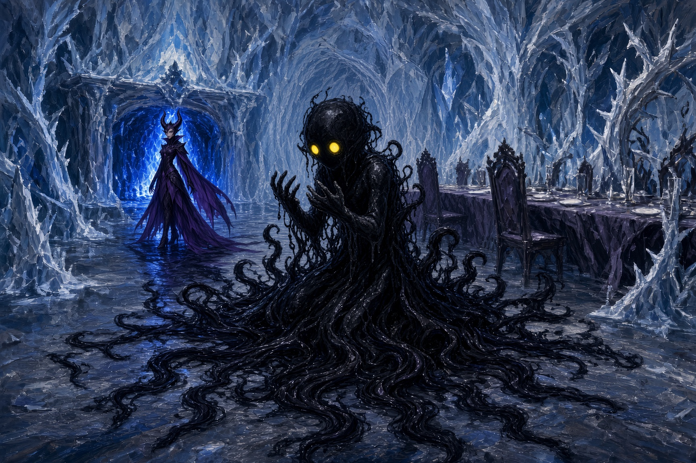

“You are not to be given food,” said Karrabosse. “You must take it.”
He had practiced using his new bracer until he had lost consciousness. When he awoke, he had found himself on a cot in a cell. He would learn that it had the basics necessary to live, a door with a lock and the key hanging on the back for his use, a basin of water with a skin of ice on the surface, a wool blanket that smelled of cedar, and a window without a view. Just more gray and thorns.
She had been waiting for him to wake up.
The door had stood open and she stood outside the cell very carefully. He noticed that not even a single part of her long flowing garments crossed the threshold. And she waited with perfect patience while he woke up and oriented himself. She had not spoken until after he had splashed his face with the painfully cold water, dried himself off as best he could and actually addressed her. She had explained that this cell was the last thing that he would receive in exchange for becoming her student. The rest he would have to earn. Her statement had been in answer to his surprised question.
“That’s it?” Wren said. “Is that a lesson?”
“It is as it is. You may think of it as the first rule. The lessons come after you understand it.” She tilted her head. Her black hair moved around her on a wind that wasn’t there. “Nobody in my house will feed you, little bird. Nobody will leave a tray at your door. If you want to eat, there is a great deal of food in this castle, and every scrap of it belongs to somebody else.”
He looked down at his right arm. The bracer lay against his skin from his knuckles to his elbow, black thorns knotted tight and twisted into and through his skin. In the night he’d rolled onto it and woken up screaming, even through the exhaustion. It had stopped bleeding, mostly. It had not stopped hurting. Wren didn’t have the foolishness to think it ever would.
“So I will have to steal it,” he said.
“Hm,” Karrabosse replied, in a soft pleased tone that gave absolutely no additional information.
“What if I can’t?”
“Then you’ll be hungry,” she said, “and then you’ll be weak, and then you’ll be dead. And at that I might even find myself a little sad. For a moment.” She smiled. “However, I do not believe that you would allow such to pass. You might even say that I believe in you.”
“You bet that I would survive?”
Karrabosse laughed politely, hiding her mouth as she did like a princess in the comics Wren had grown up with. “For the week at least. We shall see if you remain a worthwhile investment after that.”
She went away. He heard her dress whispering on the stone for a long time, much longer than a dress should take to go down one corridor.
His stomach growled.
He hadn’t eaten since the pizza place. He tried to figure how long ago that was. Time meant nothing here. The light that came in was only either slightly darker or slightly lighter but always the same gray. Reckoning time was a fool’s errand. His stomach growled painfully, interrupting his thoughts. It knew how to reckon time just fine, the way all stomachs do, like an hourglass.
The kitchens were three floors down.
He found them by smell. Smoke and fat and bread, real bread like the ancient grain loaves the hipsters liked to bake each other back home. The yeasty warm smell of it leaked through the flagstones somehow and made it hard for him to think. He followed it down stairs and along corridors to a wall of plain gray stone, and on the other side of the wall he could hear pots clanging and goblins shrieking at each other and something sizzling.
There was a door at the far end of the corridor. There were goblins coming and going through it, a stream of them, carrying sacks and barrels and baskets of things that wiggled. He considered simply walking in and using confidence or lying his way to the food. He thought of his new Lady’s face when he had lied to her and shuddered.
He put his hand on the wall.
He had used his new powers several times already. Karrabosse had forced him to turn invisible in the darkness and intangible and stick his hands through things until she was satisfied that everything was working as intended. Then he’d blacked out from the pain and, he imagined, the blood loss. He felt a little better after a long night’s sleep, but he still felt a little empty, a little bit lighter than he should. Still, he knew that if he was willing to, he could become one with nothing and slip right through this wall. He felt like he was about to drop into a bowl he’d never skated, blindfolded.
He thought about the dark. He thought about being inside it. Not invisible this time. The other one. Where hands can’t hold you. He thought about being a thing that no one can touch, not even the ones you wish would.
Something in his wrist turned over.
The thorns bit him, all of them at once. Every hook in his arm pulled in its own direction and the pain was complete, almost poetic. Parts of his brain tried to help. Others were panicking. He grit his teeth and focused on being alone. The cold black came out of his veins and pumped back into his body, spreading a cold thin all throughout his Wren-ness. His arms, his chest, his legs, and last of all, his head. He went thin, still real, but not all there like a shadow on the wall. The pain went thin too, but he could tell it was still there, waiting for him to expand again.
He stepped forward and the wall let him in.
It was the worst thing he had ever felt. Worse than the ankle. Worse even than the thorns. It didn’t hurt, and that made it worse. The stone was inside him. It was in his lungs and his eyes and the space between his teeth, cold and solid and ancient, pressing on every part of him at once. He couldn’t breathe nor see nor even tell which way was forward except by being a traveler by nature, by skate sense. There was only one thing to do when he didn’t know what to do or if he was off track. He kept rolling. It felt like forever to move six inches. Then the stone let go of him all at once and he fell out of the other side of the wall onto a floor slick with grease.
The kitchen was enormous and full of steam. Goblins were everywhere. A fire big enough to roast a cow was roasting a cow, and throwing dark shadows across the room past tables and goblins and everything else. Tables were covered in loaves. At a stone trough in the corner, scrubbing a pot as big as a bathtub, sat a huge goblin with tusks that curled up past its nose and a little embroidered nightcap, crushed and filthy, still perched on its enormous head. The jailer. Not the jailer anymore. There was a fresh red welt across its back, and it scrubbed like the pot had personally wronged it.
A cook with a face like a turnip looked up from its chopping board and saw him.
It screamed.
Every head in the kitchen turned. He was still Ink, thin as a shadow, but he wasn’t hidden. They could see him plain as anything: a black, glossy, boy-shaped smear standing literally in the middle of a table full of bread against a solid stone wall. A knife came at his head. It went straight through his face and stuck quivering in the wall. A pot. A ladle. Half a cabbage. They passed through him like he was smoke, and the cold of them went through his chest and out his back, and the goblins shrieked and threw more.
He grabbed a loaf from the table he was standing in. It went through his fingers.
He grabbed again. Through.
He was Ink. Ink couldn’t hold bread.
He had to let go of it. He had to let the dark go, right there in the middle of the kitchen with fifty goblins throwing things at him, just long enough to grab. He had the presence of mind to duck under the table before he released it. The black drained out of him, back down his arm, back into the thorns, and the thinness was replaced by horrible, searing pain. He stood up, knocking the table he was under over and in front of him. He tried to grab a loaf. A ladle caught him in the ear as he managed to snatch one in either hand. Stars burst behind his eyes. Something wet and heavy slapped across his back, a fish, and something hard hit his ribs, and a long arm reached for his collar. They were on top of him. At the trough, the old jailer had turned around with its pot in both hands. Wren met its little red eyes and they both became very terribly aware of who had walked out of its quarters with its keys.
The jailer roared.
Wren went back into the dark. The thorns tore at him all over again. The jailer’s pot came down where his head had been, went through him, and smashed on the floor behind him in a burst of gray water, and he went back through the stone with the loaves clutched against his chest and the stone in his lungs again, in his eyes, and he fell out into the corridor on the other side and lay there with his face on the floor.
The bread had come with him. Half of one. The rest had stayed in the wall. He sprinted away, more goblin noise erupting from the kitchen, and made it back to his cell before he got to eat. He locked his door, and fell on his cot, freezing, shaking, pale. He didn’t taste the bread. He just ate it, ravenous and unthinking until he had no more and lay shivering under his blanket.
He was colder than before. Much colder. His fingers were white to the second knuckle and wouldn’t bend. His heart was going fast and thin, like a bird’s. When he tried to sit up, the cell tipped sideways and the gray light went to black around the edges.
He understood, very clearly, lying there, what had happened. He had put something in him, about half a loaf. But first he had taken something out. He didn’t know how much. But it was more than half a loaf, and the taking charged interest.
That was the last thing he understood before the black closed in.
When he woke up, he sat thinking and shivering. The math didn’t work. That was the real first lesson, he decided: the math of living was rigged against life.
The second lesson he learned was a sausage.
It had been five days. Or four? Even his stomach had lost reckoning; its hourglass was leaking, and flipping it over left less and less sand to measure.
Wren had tried the kitchen twice more, and both times it had been the same: the wall, the stone in his lungs, the bite of the thorns, the grab, the run, the cold afterward that went deeper every time. The third time he’d made it back through the wall with nothing at all. He’d dropped a whole wheel of cheese in the dark between the stones and come out empty-handed and bleeding from the cut on his wrist, slow and black, and he’d sat in the corridor with his back against the wall and laughed the way people laugh when nothing is funny.
One must know all of this to understand that when the goblin offered him the sausage, Wren was not at his best.
It was the tall thin one, with arms that hung past its knees, fingers that clicked, and armor made of teacups. Wren remembered it was the one who had stopped in front of his hiding place in the thorns that very first night and sniffed, and sniffed, and almost found him. The other goblins called it something Wren couldn’t pronounce. It sounded like a cup being set down hard on a saucer. In his head, he called it Teacups.
Teacups found him sitting in the corridor outside the kitchen wall. It crouched down in front of him, all knees and elbows, its teacups rattling. It held out a sausage. A fat one, brown and glistening and still steaming from the fire, smelling of sage and pepper and fat.
“Poor bird,” said Teacups. Its voice was like a teaspoon tapping on china. “Poor little hungry bird. Here. Have it. It’s yours.”
Wren looked at the sausage. His stomach had stopped growling two days ago. It had moved on to something quieter and worse, a sort of pulling ache, like a hand inside him closing slowly into a fist.
You are not to be given food. Karrabosse’s beautiful, deep voice slid through his mind like a fox in snow.
Back in Shin-Seibu, in his old life, he used to say “Never turn down a free meal.”
You are not to be given food.
He took the sausage.
It should be said again, that Wren was not in his best state of mind. He had never been cold before this terrible place. And his life in Shin-Seibu had been a blessed one. He had never gone hungry before either. Not really. Not like this. So he had never known what a terrible and delightful spice hunger can be.
He ate the thing in three bites. It was the best tasting anything he had ever tasted in his life. Better than ice cream, better than holiday meals, better than pizza. Hot fat ran down his chin and he wiped it off with the back of his hand and licked it like a cat, desperate for every calorie. Teacups watched him do it with its milk-white eyes, its long mouth spreading slowly into a grin.
“Mine,” said Teacups softly.
Something closed around Wren’s throat.
Not a hand, nor a cuff, nor anything Wren could have seen or felt. He reached up and grabbed at nothing, just his own skin, but there was a pressure all the way around his neck like a collar, snug, not choking. Then Teacups stood up, turned, and started to walk down the corridor, and Wren stood up too. He didn’t decide to. His legs did it. He followed. He could not refuse, he could not even try to refuse.
“What did you—” Wren whispered hoarsely.
“Gift,” said Teacups, over its shoulder, delighted. “Freely given, freely took. Bird ate the gift, bird belongs to the giver. Till tomorrow.” It cackled, rattling. “No sun here, bird. No sun here at all. But she counts it. She’s fair, the fairest. But we ain’t.” It cackled like a full china cabinet falling down a staircase.
It was the longest night of Wren’s life.
Teacups took him everywhere. Down to the herd room, where the goblins slept in drifts, and made Wren step on every one of them so they woke up and saw. Up to the long hall, at supper, Teacups stood him on the table made of doors and made him hold a candle. Teacups made him fetch. Made him carry. Made him kneel and polish the teacups on its armor, one by one, all forty-three of them, while the hall roared and banged their cups and threw bones. A goblin with antlers wrapped in ribbon tied a string around his wrist, the thorny one, and led him around the hall on it like a dog. The string pulled on the thorns every time it tugged. Wren didn’t scream. He would not scream.
That he somehow still had control over, even when Teacups tried to make him say things or open his mouth. Even in this state, he still owned his words and his face. He considered spitting insults, or shouting, but the string on his bracer and the hunger reignited after pouring so much fat on it made him wary. He chose to keep silent and his face perfectly still. He had lots of practice at it. He thought of the bowl with his ankle folded under him. He thought of all the bad crowds who had come to watch him fall. He thought of Momo crying.
At the head of the table, the thorn chair was not empty.
His Lady was there. She sat with her chin on her hand and her dark eyes half-lidded, watching the whole thing the way someone watches rain. She didn’t laugh, nor did she intervene. She remained silent as a grave, yet something in her composure told Wren that she was extremely displeased.
Teacups paraded Wren past her chair, the string on his wrist, a candle in his other hand, and bowed deep, its teacups rattling. Karrabosse looked at the goblin. Wren looked at her eyes, and would have gone rigid if his body were his own. Something impossibly dark and impossibly cold moved behind them. One of Teacups’ teacups frosted over. It went white, all at once, with a tiny sound like a breath and cracked down the middle.
Nobody else saw it, not even Teacups. The goblin straightened, grinning, and led Wren on down the table.
Wren wasn’t sure what it meant, but somehow it made him feel just the tiniest bit warmer.
Sometime in the darker part of the gray, the collar let go. He felt it go all at once. It wasn’t dramatic. It just loosened, like a hand opening, and his legs were his own again. Morning was at midnight apparently.
Teacups was asleep on a pile of furs with its arms hung over the sides and its mouth open. Wren stood over it a long time. He thought about what it would be like to put his foot through its long, grinning face.
He didn’t. A theft witnessed is a debt owed, one of the herd goblins had giggled at him somewhere in the long night. Violence was also a kind of theft, he was willing to bet.
He went back to his cell and sat on the cot in the dark.
Nothing here is free, he thought. Nothing anybody gives you here is free.
And then, slower, from somewhere further down: Was it ever?
He thought about all the time and effort free meals had cost him, all the little favors he ended up owing to flunkies who shared food, expectations and obligations. He thought about a slice of free pizza going cold in front of him in a corner booth, and a big man with a face like a closed door telling him how to keep people. He thought about the warm, heavy, true feeling of it in his gut. He didn’t follow that thought any further. He was too tired, and it was going somewhere he didn’t want to go.
She found him the next day in the corridor outside the kitchen wall, sitting with his back to it, staring at nothing.
“I watched you last night,” Karrabosse said.
“Yes, ma’am.”
“You ate a gift.”
“Yes, ma’am.”
“And now you know something about my house you didn’t know before. A very old thing. A very valuable thing.” This broke him out of his hungry stupor a bit. He looked up at her and blinked a few times to focus. She tilted her head, considering him. “Someone gave it to you for the price of a laugh.” Something moved behind her eyes, very fast, and was gone. “That was careless of him.”
Wren didn’t know what to say to that, so he didn’t say anything.
“You want to ask me how,” she said. “How to eat without bleeding.”
“Yes, ma’am.”
“Then ask better.” She waited. Wren stayed silent. Not for stubbornness or anger. He just didn’t have any words. If he’d known how to ask the question correctly, he figured, he would have figured out the answer by now. When he continued to be silent, she smiled, almost gently. “What does the wall cost you, little bird?”
“Too much.”
“And what does the shadow cost you?”
He opened his mouth. Closed it.
He didn’t know. He hadn’t tried since the first night. The first time, in the corridor with her watching, his hand had gone invisible, and that had hurt, but he hadn’t been paying attention to how much because it was such a new pain. Ever since, he’d gone straight for the wall. Through. Because through was the fastest way. Through was the straight line from the bottom of the bowl to the top. Through was what you did if you were the best.
“Hands that can’t hold,” said Karrabosse, softly, “or eyes that can’t see. Two doors. One of them is very heavy, and you have been throwing yourself at it every day because it looks more impressive when you come out the other side.” She leaned down now, her mouth an inch from his ear. Her breath smelled like snow. “No one here cares how it looks, Kurobane Wren. So why are you showing off?”
She left him there.
He sat in the corridor for a long time, picking at a hole in his pants. Then he got up and went to find a good shadow.
The first part of the plan was easy. The castle was made of shadows. Light ones, dark ones. Every corner, every doorway, every place where the gray light from the windows didn’t quite reach. He stood in the deepest one he could find, in an alcove under a stair, and held up his right hand, and thought about nobody looking up.
The thorns bit.
But less. A lot less. It was the difference between a sharp winter’s wind and an ice bucket. The cold came up out of the cut and into his blood, a thin cold, a trickle rather than a flood, and his hand went away, and his arm, and his chest, and his legs, and he was standing in the alcove and he was nothing at all. He could see the stair. He could see the floor. He could not see himself.
He wasn’t thin, like before. He could tell he was still solid. When he was thin, he felt that he might even slip through the floor if he stepped wrong. He reached out and touched the wall. It was cold and rough and real under his fingers. It pushed back just as hard as he pushed it.
He picked up a small piece of stone from the floor. He could see it in his hand, floating for a long moment. Then it started to fade until it too was invisible along with him. He dropped it and as soon as it left his hand, the Ink left it with a little black wisp and the stone bounced off the floor.
He stood there in the dark under the stair and started to laugh. Very quietly, so nobody would hear.
Then he stepped out of the shadow into the gray light from the window, and the dark went off him like water off a dog, all at once, and he was standing there visible in the middle of the corridor with nowhere to hide.
He stepped back into the shadow. Gone again. He stuck his hand out into the light. It remained imperceptible until he took his foot off of the shadow under the stair.
Ink needs shadow to stand on. He’d heard her. He hadn’t listened.
This time, he tried the door.
He went through it in the shadow of a goblin carrying a barrel, so close behind it he could smell its feet. Inside, he stepped from shadow to shadow, from the dark under a table to the dark behind a hanging pot to the smoky black corner by the chimney, and every time he crossed a patch of firelight he held his breath and picked his steps with the utmost care. It was like a dance, predicting and moving around the goblins while keeping his feet on the darkness like it was his board. The thorns kept a quiet tax running the entire time, but it was much easier to maintain and he didn’t feel like he was about to die.
He came out with a whole loaf and a wedge of cheese and two apples.
He ate them in his cell with the door locked, sitting on the cot, and he chewed every bite. Afterward he was cold, but not the bad cold. A thin cold, a manageable cold. He sat with his hands under his armpits and did the math.
One loaf, one wedge, two apples. In. Five minutes of dodging goblins and dancing in shadows. Out.
It still didn’t work. It was closer. It was a lot closer. But he was still taking out more than he was putting in, and some night soon he would come out of a kitchen with a loaf and not have enough left in him to eat it.
He needed something that cost one theft and fed him for a week.
He found the answer by watching the goblins. He’d already spent days carefully checking and rechecking the shape of the castle, walking it the way he walked a new park before he ever dropped in, and he could feel that he wasn’t getting any closer to finding the line. So he did the next thing. He watched the creatures skating it and not falling down.
The goblins liked to make bets. They bet on everything. He’d noticed it the first night, coins and teeth and wriggling things changing hands down the long table, but once he started paying attention he couldn’t stop seeing it. They bet on how much they could eat. They bet on how long a candle would last. They bet on which way a moth in a globe would turn next. Two of them bet, in front of him, on whether a third would fall off a beam, and then one of them pushed him, and the other said that didn’t count, and there was a fight, and others bet on who would win it.
They even bet on him. He heard them doing it, in the corridors, in the long hall, behind his back. They bet on whether he’d make it through the kitchen. They bet on whether he’d last another week.
It was two days after Wren had stolen from the kitchens. He’d ransacked them twice again since, and while still not running entirely positive, he felt much more confident. Wren sat in a corner of the long hall at supper watching the goblins bet when the idea struck him. He sauntered up to the foot of the table made of doors, where the goblins were crowded together arguing terms of a bet.
“I’d like to take a bet,” he said without waiting for a pause. He said it with his whole voice and it was enough to carry in the hallway. From her chair, he could see his Lady’s eyes sparkle, though she sat with her face to the fireplace as still as ice.
The hall quieted down. At the other end of the door table a few goblins still wrestled over a pair of forks. The rest turned towards Wren. A hundred eyes stared, gold, green, milk-white.
“On what?” said a goblin with a face like a bulldog.
“On me. I think I’ve proven I’m pretty capable. What do you figure I can’t do?”
The bulldog grinned. “What’ll you bet, bird? You ain’t got nothing.”
“First, what I want. If I win, you feed me. A week’s food. Whatever I want from the kitchen, carried to my door.”
The hall muttered. Something passed down the table, quick, one goblin to the next, a word, a look.
“That’s a gift,” said somebody. “That’s giving. Can’t give the bird food. She said.”
“Oh right, because you’re all such cuddly saints. It’s not a gift,” Wren said with a sneer. “It’s winnings. I take it. I win it off you.”
The hall went very, very quiet.
At the head of the table, in the thorn chair, Karrabosse put her chin on her hand. She didn’t say anything. She didn’t move. But one corner of her mouth went up, just slightly, the way a cat’s tail moves once when it sees a bird.
“And if you lose?” said the bulldog slowly.
“Then I’m yours till tomorrow.” Wren made himself say it calmly. “Like with him.” He tipped his head at Teacups, who was sitting halfway down the table polishing a cup and stopped polishing.
The bulldog looked at the thorn chair. The thorn chair didn’t look back. That seemed to be enough.
“What’s the bet?” said the bulldog.
Wren hadn’t thought about that yet, but he could see the former jailer down the table, glaring at him with hate in its eyes.
“The jailer’s keys,” he said. “The new jailer. From under his pillow, while he’s sleeping on them. I bet I can bring them back here right now before the candle burns down to that ring.”
The hall exploded.
They bet on him. They bet against him. Coins flew down the table. Teeth. A small screaming thing in a bag. The bulldog put up the week of food and six goblins put up more on top of it, and a candle was set in the middle of the table with a ring scratched around it, and somebody lit it. Wren walked out of the long hall into the shadows of the corridor with a stupid grin plastered on his face, feeling warm.
It was easier than it should have been. The new jailer was small and sharp and sober, with a face like a hatchet, and it had learned from its predecessor. The hook was empty over its bed. It slept with the ring of keys under its pillow and one hand curled around them. But the quarters were dark, and now the shadows belonged to Wren. He stood beside the bed, invisible, and slid his hand under the pillow a quarter inch at a time. The jailer stirred just as Wren touched the key ring, and began muttering in his sleep. Wren simply waited until the creature shifted and wiggled and tried to adjust its grip on the ring. That’s when Wren pulled them, just a quick, smooth drag out of the jailer’s reach. Then he had them in his hand, pressed between his forearm and chest and was walking out of the room.
He walked back into the long hall with the candle still burning a finger’s width above the ring and dropped the keys on the table in front of the bulldog.
The hall screamed.
He’d heard crowds scream before. He knew the different cheers and shouts like tribesmen in the frozen tundra know different kinds of snow. This one was his favorite of all. It was the sound when he hung in the air, when he and gravity shook hands and poked fun at death. He’d missed it badly, so badly that he didn’t even care where it was coming from. A hundred goblins’ throats, shrieking and pounding and throwing things. It went into him like warm water, filling him up from the feet. He grinned like he hadn’t since before the contest back home.
He looked up and scanned the crowd, feeling smug, scanning for the faces in the crowd the way he always had.
It wasn’t until much later, alone in his cell with a basket of bread and sausage and cheese and apples at his feet, a week of it, devouring it until his stomach hurt, that he suddenly realized who he had been looking for. He bit a sausage and pretended he was warm.
He made it a habit to take about a bet a week. It was just a matter of logistics and crowd management. And he was good at the second one. He could probably store as much food as he liked in the refrigerator of his cell, meaning the entire cell, but he knew that showing off too much all at once would eventually bore the crowd. About once a week and irregularly within that time frame kept the goblins excited. It kept the bets coming without the challenge rising too quickly and allowed him to occasionally take additional bets for things other than food.
The turnip-faced cook’s ladle, right out of its pot, while it was cooking. A ribbon from the head of the goblin with antlers. A single moth out of a lantern globe, without breaking the glass. The bulldog’s two front teeth, which turned out to be false, and that was its own kind of scandal. Every one cost him one theft and one long walk through the shadows, occasionally a nip into thinness, and every one fed him for a week.
The crowds got bigger. Goblins he’d never seen came up from the deep halls to watch him go and to be there when he came back. They chanted something when he came into the long hall now, a word he didn’t know. He didn’t ask what it meant. It didn’t sound like an insult.
He stopped being cold. He felt stronger, and was even needing to manage his food and do a little exercise, he’d started putting on a bit of fat before he noticed. He made a bet to get his clothes repaired. He made another bet to get warmer clothes. Another to get a second blanket.
His ankle healed. Not quite straight. It had a lump in it now on the outside and it ached when the frost was thick, which was always, but it held his weight, and after a while he forgot to limp. Then one day he noticed he was running down a stair on the balls of his feet the way he used to run up the ramp at the park, and he stopped on the landing. He stood there breathing for a bit, and didn’t know what he felt.
Karrabosse taught him in the gaps.
She never taught him in a room, she seemed to carefully avoid being in a proper place alone with him. She’d find him on a stair, or in a corridor, or once in the middle of a bet, standing invisible in the shadow of a pillar while a goblin walked past three feet from his nose. She’d stand next to him in the dark like she could see him perfectly, and maybe she could. Then she would speak as though no one was there at all, or she would look right at him and explain as though giving a public lecture and he just happened to be the only listener who had chosen to attend.
She certainly covered a wide array of topics: How the dark was shaped. Why shadows were deeper the brighter the light that cast them. How to hold the Ink in his blood still, like holding your breath, so it didn’t leak out of him as quickly. How to stretch a small shadow, just a little, to cover a gap he couldn’t cross.
“It will cost you,” she often said, like a chorus. “You will pay for every inch you stretch, every bit of darkness you move.”
“Tell me how much it will cost.”
And she told him. Exactly. Every time. To the drop.
He never caught her in a lie. He looked for them. He had grown up in the city, and he knew better than most that people are dishonest if only because they are dishonest with themselves. He lay on his cot one night, checking facts and practicing the calculations he’d derived from her lessons: time spent in shadow to necessary calories and protein and recovery. The thought came without preamble. I don’t think the Lady can lie. It startled him. He sat up and considered the alien thought seriously. She had always answered any question he had, and she explained the whole of it if he was willing to pay the cost by remaining for the entire explanation.
And then he realized, with a kind of dawning dread, what the real cost for the knowledge was. The trouble was never what she told you. Facts just exist in the universe, and she seemed to think that, once discovered, they cost nothing at all since they could be copied forever. The trouble came from what those who heard her words chose to do with those facts.
Wren decided he needed to be more careful with his questions from then on.
Teacups had been losing.
It bet against him every single time, which was a choice, and every time Wren walked back into the long hall with the thing in his hand and dropped it on the table, the crowd screamed and Teacups paid. It paid in coins at first, then in teeth, and when it ran out of both it started paying in the cups off its own armor, unhooking them from their wires one by one with its long clicking fingers like it was pulling out its own hair. It was down to thirty-four. It rattled less when it walked, and Wren found that he missed the sound a little, the way you miss a car alarm when it finally stops.
It watched him. Wren felt it watching him all the time now, from across the long hall, from the far end of a corridor, from the dark at the top of a stair, the milk-white eyes, the clicking fingers. Click, click. Click, click. He had been watched by a lot of people in his life, and he knew the difference between a crowd that wanted to see him land and a crowd that wanted to see him fall. Teacups was a crowd of one, and it was not hoping he would land.
On the night of the eighth bet, Wren walked back in with the bulldog’s false teeth, and the hall screamed, and Teacups paid out three more cups with its long fingers shaking. Then it stood up.
“Bird,” it said.
The hall quieted, the way a room does when someone stands up at a wedding who was not supposed to give a speech.
“Big bird now. Brave bird.” Teacups clicked its fingers. “Takes keys. Takes teeth. Takes little things. Little nothings.” It leaned down the table toward him, and its long mouth spread. “Bet you can’t take from Her.”
The quiet went very quiet.
Wren had heard about Her table. Everyone talked about it, in the corridors, in whispers, the way the flunkies at the park used to talk about the old drained pool behind the shut-down motel that nobody skated, partly because it was cracked and full of rebar and partly because of something that had happened there before any of them were born that nobody could quite agree on. There was a room above the long hall, up a short stair behind the thorn chair. It was Her room, where She ate when She ate, and there was a table there, set for one. Nobody went up the stair. Nobody touched the table. Nobody stole from Her table. It was the oldest rule in the castle, older than the rule about gifts, older than the rule about witnesses, and the goblins told it to their children before they told them anything else.
“There’s a fruit,” said Teacups, almost sweetly. “On a silver dish. Red. Red as a bird’s heart. Always there. Never eaten. Bet you can’t bring it down.”
Wren looked at the thorn chair.
It was empty. His Lady had gone wherever she went when she wasn’t watching things, which as far as he could tell was a very short list of places.
He looked around the long hall. A hundred faces, gold eyes and green eyes and milk-white, all of them waiting and leaning in. Every one of them wanted to see what he would do, and he could feel it the way he had felt the crowd at the edge of the bowl on the day of the contest, a heat on his skin, a pressure, a hundred eyes holding him up like a hand under his back.
He should have said no. He knew it the way he knew a ramp was wrong before he dropped in. He had a lump on his ankle to remind him not to. It pulsed with his heart beat now, warning him.
“What are you betting?” he said.
“Everything,” said Teacups. It spread its long arms, and its thirty-one remaining cups rattled. “Every cup. Every coin. Every tooth. A month of food. Two months. Everything. And if you lose, bird—” the grin went wider, wider, wider than a mouth should go—“you’re mine. Not till tomorrow. Forever.”
The hall roared.
He went.
As he slipped into the shadow behind the thorn chair, he saw, out of the corner of his eye, Teacups lean down and whisper to a little goblin in a lace collar, and the little one nod and scurry off along the wall toward the side door. He didn’t think about it. He was already gone, and besides, he was busy thinking about how good it was going to feel to walk back in.
The stair behind the thorn chair was short and narrow and very dark, which was the first good news he’d had all night. He went up it invisible, a shadow climbing a shadow, and the thorns kept their quiet tax running on his arm while he held the Ink still in his blood the way she’d taught him, like a held breath.
At the top there was a door, half open, and a room beyond it.
It was smaller than he expected. He had imagined a cathedral, or at least something like the long hall with better furniture. It was round, and the walls were thorns, but the thorns here had flowers on them, small white roses, hundreds of them, maybe thousands, and every one had frost on its petals. A single high window let in the same flat gray light as everywhere else in the castle, though here it seemed softer somehow, like it had been asked politely. There was a table, small and dark and polished, with a single chair. And on the table, on a silver dish, there was a pomegranate.
It was red. Red as a bird’s heart, the goblin had said, and it was. It was the only thing in the room that had any color in it at all, and it glowed in the gray like a coal in a dead fireplace. A little split ran across the top of it, and through the split he could see the seeds, crowded together, wet and bright as rubies.
He stood in the shadow by the door for a long time looking at it. He told himself he was planning his line. Mostly he was just looking.
Then he stepped out of the shadow. He had to. The table stood in the middle of the room in the full light of the window, there was no shadow to reach it by, and he wasn’t about to try stretching one in Her room. The dark slid off him and he was visible, standing in Her room, in Her light, with frost on the roses all around him, and it felt like standing on a stage in an empty theater.
He picked up the pomegranate.
It was heavier than he expected, and cold, and the skin was smooth and hard as leather. He held it in both hands against his chest, carefully, the way he had held the stolen keys in the jailer’s quarters, and stepped back into the shadow by the door and was gone.
He didn’t eat any of it. It didn’t even occur to him, which he would think about later and not know what to make of. It was a bet. You didn’t eat the bet.
He went down the stair.
The long hall was silent.
That was the first thing. A hundred goblins, and not one of them was making a sound, which in that hall was like walking down to the beach and finding the ocean gone. They were standing, all of them, backs against the walls, heads down, exactly the way they had stood in the corridor on the night Wren brought the jailer’s keys up out of the dungeon. The fire in the great fireplace had gone low and blue.
In the middle of the hall, in front of the table made of doors, stood Karrabosse.
She held Teacups.
She didn’t hold it with her hands. She held it with the dark. Ink came up out of the floor around her feet, out of her shadow, out of the hem of her dress, thick and black and glossy, and it had wrapped itself around the goblin like a fist from its knees to its chest and lifted it, so that its long feet dangled and kicked a foot off the floor. Its teacups rattled. Its fingers clicked and clicked and clicked. Its milk-white eyes were rolling.
Wren stopped at the bottom of the stair. He was still invisible, standing in the deep shadow behind the thorn chair with the pomegranate against his chest and the thorns biting his arm, and nobody in the whole hall could see him.
Karrabosse turned her head and looked straight at him.
“I believe,” she said, “you have something of mine.”
He stepped out of the shadow.
He didn’t think about it. He didn’t think about running, or lying, or saying it had been the goblin’s idea, which it had. He had lied to her twice already, back when she wore another face, and he had not forgotten what that cost. He walked forward across the long hall in front of a hundred silent goblins, and he held out the pomegranate in both hands, and he bowed the way his mother had taught him to bow at the shrine, and held it there.
She took it from him. Her fingers brushed his, so cold they burned.
She looked down at it for a moment, turning it in her hand, the little split in the top, the ruby seeds. Then she looked at him, and at the pomegranate, and back at him. Something moved behind her eyes again, very fast, and this time it went all the way up to her mouth.
“Hm,” she said. “How very forward.” She tucked the fruit into the crook of her arm. “Come back and try that again in a few hundred years, little bird.”
Wren had no idea what she was talking about. He kept his face perfectly still and bowed lower, which seemed like the safest thing to do with a sentence like that.
Somewhere along the wall a goblin made a very small noise, like a laugh strangled in its throat, and stopped.
“Stand up,” said Karrabosse. “Watch.”
He stood up. He watched.
She turned back to Teacups, and her face changed. Not much. It didn’t need to. It went still and cool and polite, the way a judge’s face goes, the way his mother’s face went at the shrine when she bowed.
“You sent a thief to my table,” she said to the goblin. Her voice was soft. “You sent my student to my table. To lose him. To keep him. To own him, forever, because he beat you at a game you started. And then you sent a little one running to me, so I would catch him with my fruit in his hands.” She tilted her head. “Two thieves in one night, and you were both of them. And before that—” her voice went softer still—“you sold him one of the oldest rules of my house for the price of a joke in the long hall.”
Teacups shrieked. It was a china sound, a cup shattering on a stone floor.
“The thief who is sent is only a hand,” said Karrabosse. “The one who sends him is the thief.” She tilted her head the other way. “And I keep my house.”
The Ink moved.
It went into Teacups. Not around. In. Through the gaps in its armor and under its skin, into its mouth, into its milk-white eyes. Wren watched the goblin’s gray-green color go out of it the way color goes out of a photograph left too long in a sunny window, only faster, and wetter. The gray-green ran into black from the edges inward, and the black was glossy and gleamed in the blue light from the fire.
Its teacups fell off. One by one they slid off the slick black body as it changed and dropped to the stones and shattered, thirty-one of them, one after another, a long slow ringing like bells at a funeral nobody had wanted to attend.
Its shape went next. The long arms, the knees, the clicking fingers, they softened, they slumped, they ran together like candle wax. Its eyes went round, round and flat and yellow, glowing in the black like two porch lights in fog.
And deep inside it, very deep, at the center of where its chest had been, there was a light.
It was small and gold and warm. It pulsed, slow and steady, like a heartbeat, like the moths beating their wings in their globes. Wren stared at it. It was the only warm thing in the whole black shape. It was the goblin. He knew that somehow, the way he knew which streets to cross back home and which ones to skate around. It was everything that had been the goblin, the cups and the clicking and the cruelty and whatever else had been in there that Wren had never bothered to look for, all of it crowded down into one small gold glow.
The Ink closed over it.
The gold went dim. It went red, then deep red, then purple, a bruised dark violet like the sky over Shin-Seibu on the last day. It pulsed once more, faintly, like it was asking a question.
Then it went out.
And the thing that had been Teacups stopped having a shape at all.
It just hung there in Karrabosse’s grasp, black and shining and loose, folding and unfolding, two yellow eyes floating in it with nothing around them to belong to. Then, very slowly, it lifted what might have been a hand. It brought what might have been fingers together.
Click.
Click, click.
Trying to remember what they were for.
Wren’s whole body went cold, all the way through, colder than the wall had ever made him, colder than the black water. He knew that. He had seen that before.
He had seen it in a living room, under warm yellow lights. A long black hand turning a coffee mug around and around and around, slowly, like it was trying to remember what a mug was for. A cream-colored cardigan with wooden buttons, draped over black shoulders. A man’s work shirt with a little name tag stitched over the pocket.
The name on the tag. He hadn’t read it. He hadn’t had to. He knew it. He’d known it since he was born.
“No,” said Wren.
He didn’t say it loudly. He didn’t think anyone heard. But Karrabosse turned her head.
She opened her hand. A shadow on the floor beside her opened like a mouth, black and bottomless, and the formless thing that had been Teacups slid off her Ink and down into it, and the mouth closed, and the floor was just floor. Thirty-one broken teacups lay scattered across the stones in a glittering ring.
“Leave us,” said Karrabosse.
The long hall emptied. A hundred goblins went out of it without a single word or bet or giggle, which Wren would not have believed possible when he first came up out of the dungeon, and the doors closed behind them, and it was just the two of them by the blue fire.
Wren hadn’t moved.
“They were wearing clothes,” he said. His voice sounded like somebody else’s, a long way off, like a voice on a bad phone line. “In my house. Two of them. They were wearing my mom’s sweater. My dad’s work shirt. I thought—I thought they’d taken them. Off them. I thought they’d—”
He couldn’t finish.
Karrabosse didn’t say anything for a long time. She stood beside him, not touching him, the pomegranate tucked in the crook of her arm, and looked into the fire.
“The Ink takes what’s nearest,” she said finally. “When a world falls. It takes what’s nearest, and what’s nearest is always the people who are home.” She was quiet a moment. “Were they home, Kurobane Wren? When the rain came?”
They were always at work. They missed every contest. The one night they were home, the front door had been standing open when he got there, and some part of him had already decided, without asking the rest of him, that it was his fault. He must have left it open. He must have.
He didn’t answer. He didn’t need to. She already knew. She knew everything, and she never lied, and he found that he hated her for it, and he found that he couldn’t, and he stood there in the long hall with his face perfectly still while something behind it came apart like wet paper.
“Did it hurt them?” he said.
“Yes,” said Karrabosse. “For a little while.”
She didn’t lie. She never lied. He had checked.
“But not anymore,” she said. “At least they cannot suffer anymore. Whatever is left in that dark doesn’t remember enough to hurt.” She turned to look at him. Her eyes were dark and steady, and if there was pity in them, it was the kind of pity a winter has for the things it kills. “That is the only comfort I have, little bird. I don’t have a better one. I won’t pretend I do.”
He nodded. He kept nodding. He couldn’t stop.
“If you want something to do with what you’re feeling,” said Karrabosse, “and you will, soon, you will want it very badly—I would suggest revenge.”
He looked up at her.
“Somebody brought the rain to your city,” she said. “Somebody opened the dark under it. Somebody wanted something very much and didn’t care what it cost the people who were home.” She shifted the pomegranate in her arm. “Revenge is a very nourishing thing. It will keep you warm for a long time. And it’s the one meal, little bird, that nobody can ever give you.”
She left him there by the blue fire.
He stood in the empty hall with thirty-one broken teacups glittering on the stones around his feet for a long time. Then he crouched down and picked one up. It was a little white one with a chipped gold rim and a painted flower on the side, and it had a crack running straight down the middle, the first crack, the one that had come with the frost on the night Teacups paraded him through the hall.
He turned it around in his hand. Slowly. Around and around and around.
Then he realized what he was doing, and he stopped, and he put it in his pocket, and he went back up to his cell, and he locked the door, and for the first time in the Realm of Thorns he was not hungry at all.